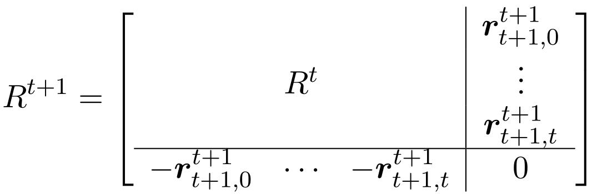
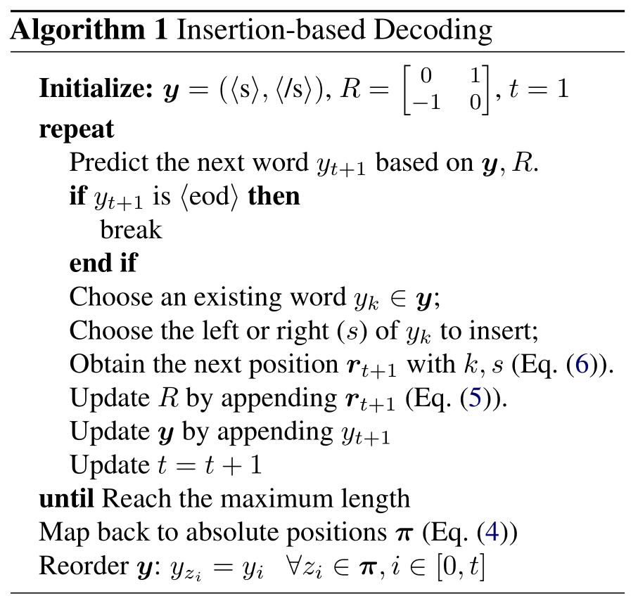
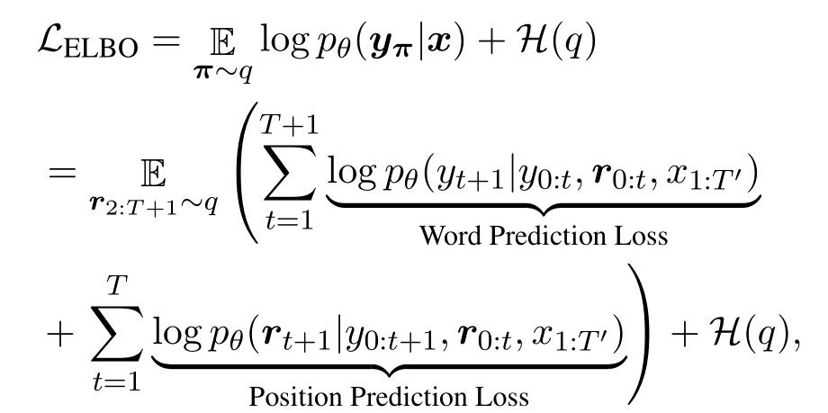
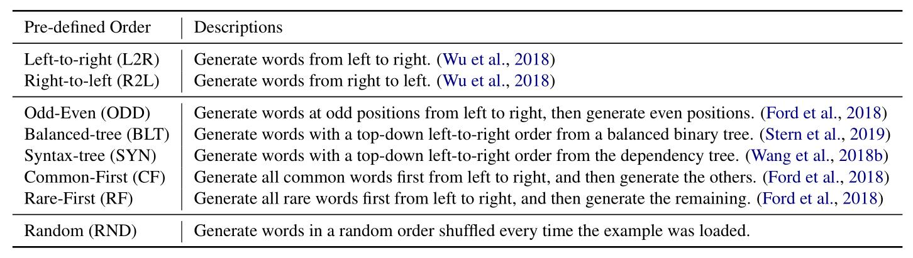
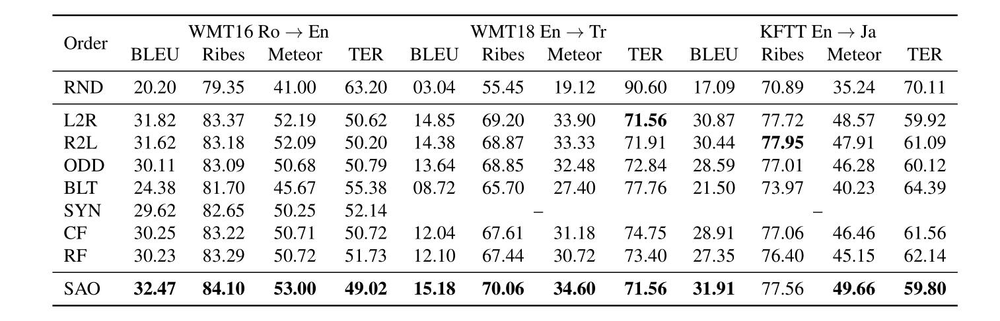

关注公众号【算法码上来】，每日算法干货马上就来！

论文地址：Insertion-based Decoding with automatically Inferred Generation Order
介绍
大多数的生成模型（例如seq2seq模型），生成句子的顺序都是从左向右的，但是这不一定是最优的生成顺序。
可能有人要说，反正最终都是生成一个句子，跟生成顺序有啥关系？
但是大量实验确实表明了从左向右生成不一定是最好的，比如先生成句子中的核心词（出现词频最高的词，或者动词等）可能效果会更好。
于是这篇论文就提出了自动推测最佳的生成顺序，考虑所有顺序的概率，优化概率之和。
但是对于任意一个生成顺序，如何还原原本的句子呢？
本文又提出了一个相对位置编码的方案，并且融合到了Transformer里。
传统序列生成模型
给定一个输入句子$x$，生成的句子$y$的概率可以被建模为：
\[
p_{\theta}(y | x) = \prod_{t=0}^{T}{p_{\theta}(y_{t+1}|y_{0:t}, x_{1:T’})}
\]
其中规定输出句子的首尾单词$y_{0}$和$y_{T+1}$是特殊记号。
那么模型最大化正确输出的概率就行了。
解码的时候在每个时刻取概率最大的输出单词就行了，当然也可以加上beam search等方法提高性能。
InDIGO
本文将生成顺序看作隐变量$\pi$，那么对于一个输出句子$y$，他的隐变量可能取值是阶乘级别的。
我们取所有顺序的概率之和，作为输出$y$的概率：
\[
p_{\theta}(y|x) = \sum_{\pi \in \mathcal{P}_{T}}{p_{\theta}(y_{\pi}|x)}
\]
而每个生成顺序的概率被定义为：
\[
p_{\theta}(y_{\pi}|x) = p_{\theta}(y_{T+2}|y_{0:T+1}, z_{0:T+1}, x_{1:T’}) \cdot \prod_{t=1}^T{p_{\theta}(y_{t+1}, z_{t+1}|y_{0:t}, z_{0:t}, x_{1:T’})}
\]
这里多了一个变量$z$，用来表示生成的单词在原句子中的绝对位置。
还多了一项$y_{T+2}$，表示句子生成结束。
为什么要用这一项呢？因为原来的结束符号< /s>被当作第二项输入进序列了。
这里就会出现一个问题，在每一步预测的时候，都不知道最终句子长度是多少。
那么怎么知道绝对位置$z$是多少呢？所以要用相对位置$r$来进行编码。
假设在$t$时刻，对于第$i$个单词$w_i$，采用一个向量来表示它的相对位置，每个维度取值只有-1，0和1三种。
$r_{i,j}$定义为：如果$w_i$绝对位置在$w_j$的左边，就取-1；如果是一个词，就取0；如果在右边，就取1。
可以观察到这个时刻向量长度其实只有$t+1$，而且下个时刻长度就会加1。
将这些向量拼接成一个矩阵$R$，每一列表示一个单词的位置向量，这个矩阵关于主对角线对称的元素其实是相反数。
那么下一个时刻是不是这个矩阵得重算呢？不需要。
因为下一个单词无论插在哪里，都不会影响之前的单词的相对顺序，所以只要给这个矩阵$R$新增一行一列即可：

但是$r_{t+1}$不能随便取值，不然可能是非法的，没办法还原到绝对位置。
所以这里定义$r_{t+1,j}$这么算：
首先预测一个单词$y_{k}$，然后预测$y_{t+1}$插入到它的左边还是右边。
如果$j = k$，那么如果插入到左边，值取-1，插入到右边取1。
如果$j \neq k$，那么$y_{t+1}$和前面单词的相对顺序其实是和$y_k$和他们的相对顺序完全相同的，那么直接取$r_{k, j}$就行了。
伪代码如下：

最后得到了相对位置之后，怎么还原为绝对位置呢？
只需要用下面式子就行了：
\[
z_i = \sum_{j}{\max\{0, r_{i, j}\}}
\]
也就是看每个单词前面有多少单词。
模型
本文只修改了Transformer的解码器部分，因为对于随机的生成顺序，解码的时候绝对位置未知，所以传统的绝对位置编码行不通。
稍稍修改attention的计算方式：
\[
e_{i, j} = \frac{(u_i^{\top}Q)\cdot(u_j^{\top}K + A_{[r_{i,j}+1]})^{\top}}{\sqrt{d_{\text{model}}}}
\]
其中$u$是输出的隐层表示，$Q, K, A$是参数，$A$根据相对位置不同分为三个向量表示。
经过attention计算之后，得到了当前已预测词的表示矩阵$H$，那么下一个词和对应相对位置概率为：
\[
p(y_{t+1}, r_{t+1}|H) = p(y_{t+1}|H)\cdot p(r_{t+1}|y_{t+1}, H)
\]
也就是先预测下一个单词是什么，再预测它的相对位置。当然也可以倒过来，只是实验效果不如这个。
预测单词的概率：
\[
p_{\text{word}}(y|H) = \text{softmax}((h_t^{\top}F)\cdot W^{\top})
\]
预测下一个词应该插在哪个位置：
\[
p_{\text{pointer}}(k|y_{t+1}, H) = \text{softmax}((h_t^{\top}E + W_{[y_{t+1}]})\cdot [H^{\top}C; H^{\top}D]^{\top})
\]
注意到这里不仅拼接上了下一个词的词向量，还区分了每个词左边和右边的隐层表示。
其实这里有个问题，一个词在$w_i$的右边不就等价于在$w_{i+1}$的左边吗？那其实这两个预测结果都是对的。虽然最后的$r$向量都是一样的。
目标函数
因为一个句子的可能排列顺序太多了，不可能一一枚举，所以这里最大化ELBO来代替最开始的概率之和。
对于输入$x$和生成$y$，首先定义一个生成顺序$\pi$的近似后验$q(\pi|x, y)$。
然后ELBO可以表示为：

注意这里如果近似后验训练中固定不变的话，第二项可以忽略。
然后就可以根据近似后验来进行采样，优化这个函数了，那么这个近似后验怎么定义呢？
第一种方法是定义为一个常见的确定的顺序，比如从左向右、从右向左等等，详见下表：

这种情况下，模型其实就变成了和普通的序列生成模型差不多了，只用最大化一个生成顺序的概率就行了，区别就是多了相对位置编码。
第二种方法是用beam search，这里称作Searched Adaptive Order (SAO)。
传统的序列生成模型其实也有beam search，不过那是在每个时刻解码概率最大那些子序列。
而这里的beam search空间更大，搜索的是整个排列的空间。
也就是在每个时刻，遍历所有的下一个单词和它的相对位置，找出最大的$B$个子序列。
最后的目标函数变为了：
\[
\mathcal{L}_{\text{SAO}} = \frac{1}{B} \sum_{\pi \in \mathcal{B}}{\log{p_{\theta}(y_{\pi}|x)}}
\]
这里近似后验被定义为了：如果$\pi$在$\mathcal{B}$中，概率为$\frac{1}{B}$，否则为0。
还有一些小trick，比如beam search加入噪声，这样可能采样到概率比较小的那些排列。
还有位置预测模块收敛的比单词预测模块更快，这就会导致模型最后总是先预测出高频词或功能词（大雾。。。）。
解决方法是先用给定的顺序（例如从左向右）预训练一遍模型，然后再训练beam search模型。
最终解码还是用上面的伪代码，只是加入了beam search。
但是这里是先预测的单词，再预测的位置，和训练时的beam search略有不同。
实验
实验主要做了几组机器翻译、词序还原、代码生成和图像标签生成，这里就简单看一下机器翻译结果，其他的详见论文。
机器翻译结果如下：

可以看出beam search的提升还是挺大的，而用随机顺序生成序列效果很差，用句法树的遍历顺序生成也挺差的。
其他的实验细节和结果详见论文，这里就不展开分析了。
总结
这篇论文提出了考虑多种序列生成的顺序，以此提升最终生成的效果，实验证明还是有效的。
为了记住这种顺序，还提出了相对位置表示，用来解决原始Transformer无法表示随机排列的问题。
但是总感觉beam search和相对位置表示的矩阵不是很优雅，很繁琐。
后续工作也提到了直接预测排列，而不是用beam search。
还有这种相对位置表示能否用在其他任务上，比如做成通用的位置表示？
不过这种“打乱顺序”的思想倒是挺不错的，很多地方可以用，毕竟人类看句子第一眼可能也会看到核心关键词嘛。


![论文赏析[EMNLP19]如何在Transformer中融入句法树信息？这里给出了一种解决方案](/medias/featureimages/17.jpg)